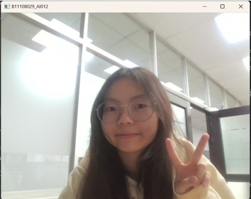
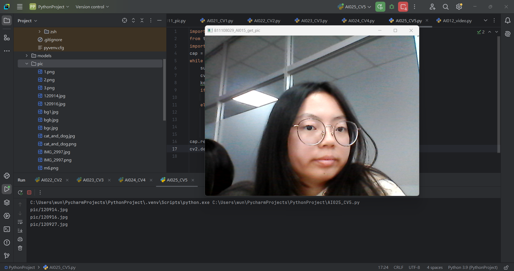

AI025
攝影機即時擷取 × 截圖儲存
擷取本機攝影機畫面即時顯示，並可按鍵截圖儲存。
功能簡介
本程式使用 OpenCV 擷取本機攝影機畫面，並提供即時顯示與按鍵截圖儲存功能。使用者按下數字鍵 0 即可將畫面存為圖片，並自動命名為當前時間。
成果展示


程式碼片段
AI025｜攝影機即時擷取
import cv2
from time import strftime
import os
cap = cv2.VideoCapture(0)
while cap.isOpened():
success, frame = cap.read()
cv2.imshow('A11408001_AI025_CV5', frame)
keyb = cv2.waitKey(100) & 0xFF
if keyb == 27: # ESC 鍵離開
break
elif keyb == ord('0'):
systime = strftime("%H%M%S")
imgname = os.path.join('../pic/', systime + '.jpg')
cv2.imwrite(imgname, frame)
print("圖片已儲存：", imgname)
cap.release()
cv2.destroyAllWindows()